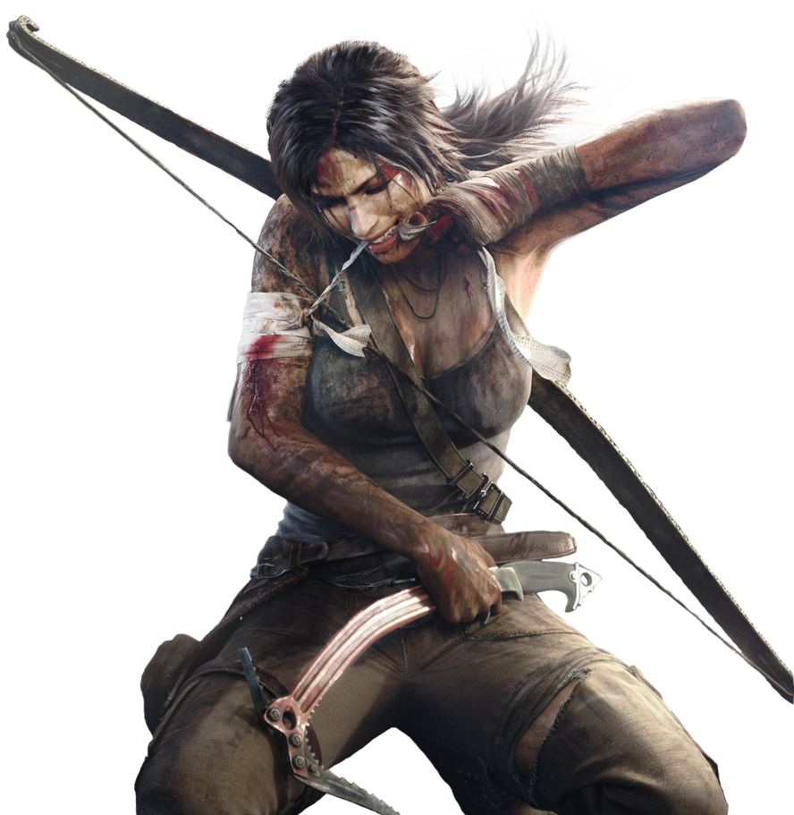

Tomb Raider é uma série de jogos eletrônicos, histórias em quadrinhos e filmes tendo como protagonista a personagem Lara Croft. Desde o lançamento do primeiro Tomb Raider, em 1996, as séries tiveram um grande lucro e Lara transformou-se num dos principais ícones da indústria de video-jogos/vídeo games. O Guiness Book reconheceu Lara Croft como "a Melhor Aventureira Heroína do Mundo de video-jogo/vídeo game mais bem sucedida" em 2006.
Quando tinha 9 anos de idade, Lara Croft sobreviveu a um acidente de avião na Cordilheira do Himalaia, onde a mãe dela foi dada como desaparecida. Depois de resistir a uma caminhada de dez dias até Katmandu, Lara passou o resto de sua infância sendo criada pelo seu pai, o arqueólogo Richard Croft, o Conde de Abbingdon. Aos 18 anos, depois da morte de seu pai, Lara herdou os bens da família, tornando-se a Condessa de Abbingdon, uma condessa da família real britânica, bilionária e sempre pronta para ajudar.
Lara é geralmente apresentada como uma inteligente, atlética e às vezes imprudente inglesa de nobre origem que viaja pelo mundo em busca de artefatos inestimáveis. Conhecida como arqueóloga e aventureira, ela frequentemente se aventura em antigas, e muitas vezes perigosas, tumbas e ruínas. Além de armadilhas e quebra-cabeças, Lara encontra uma variedade de inimigos, incluindo rivais, gangsteres, animais perigosos (incluindo dinossauros), criaturas lendárias e seres sobrenaturais.